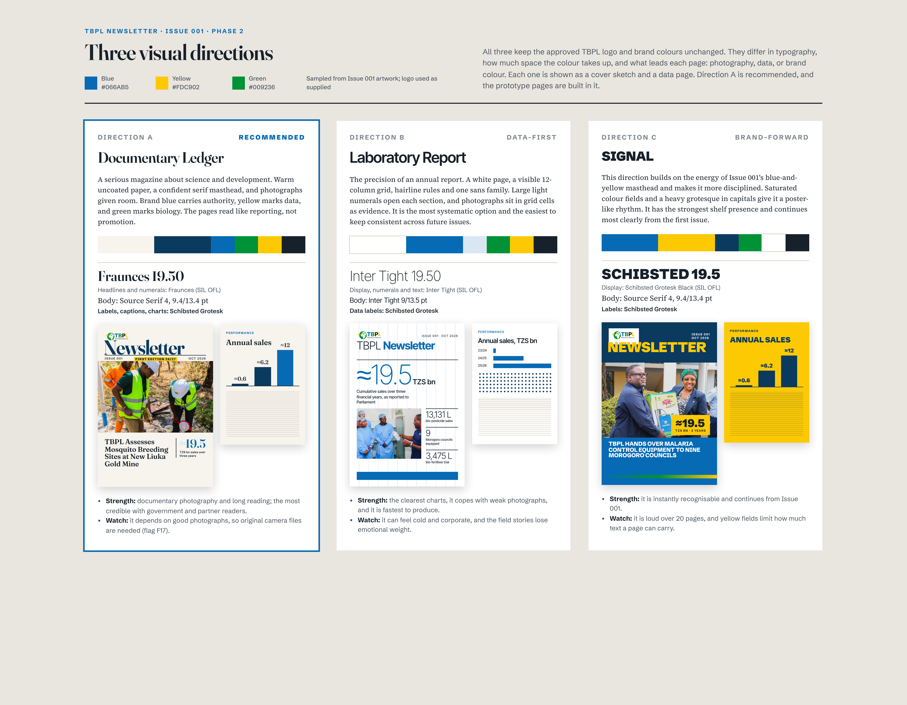
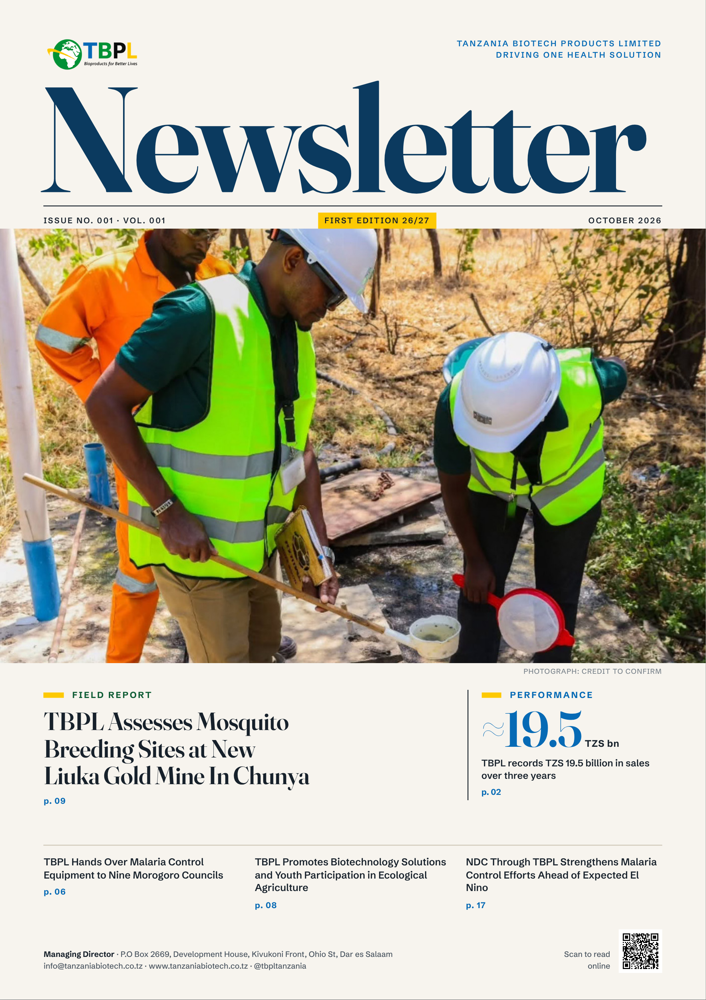
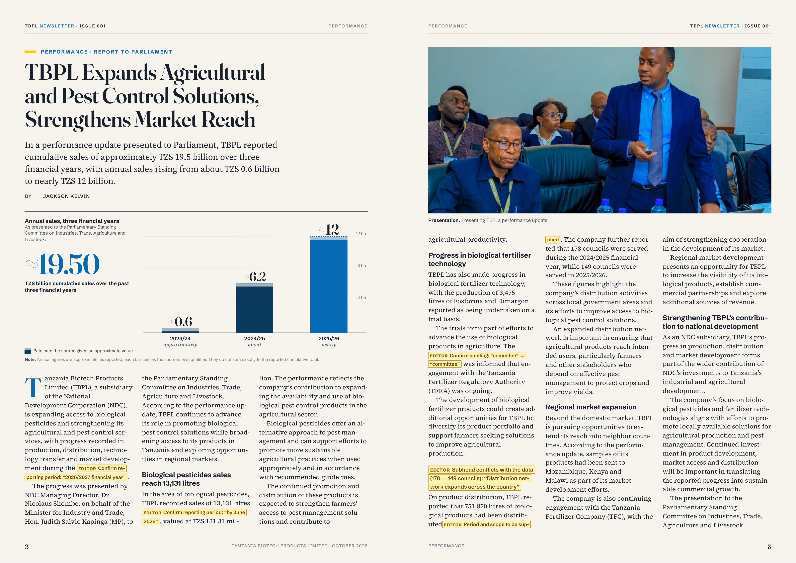
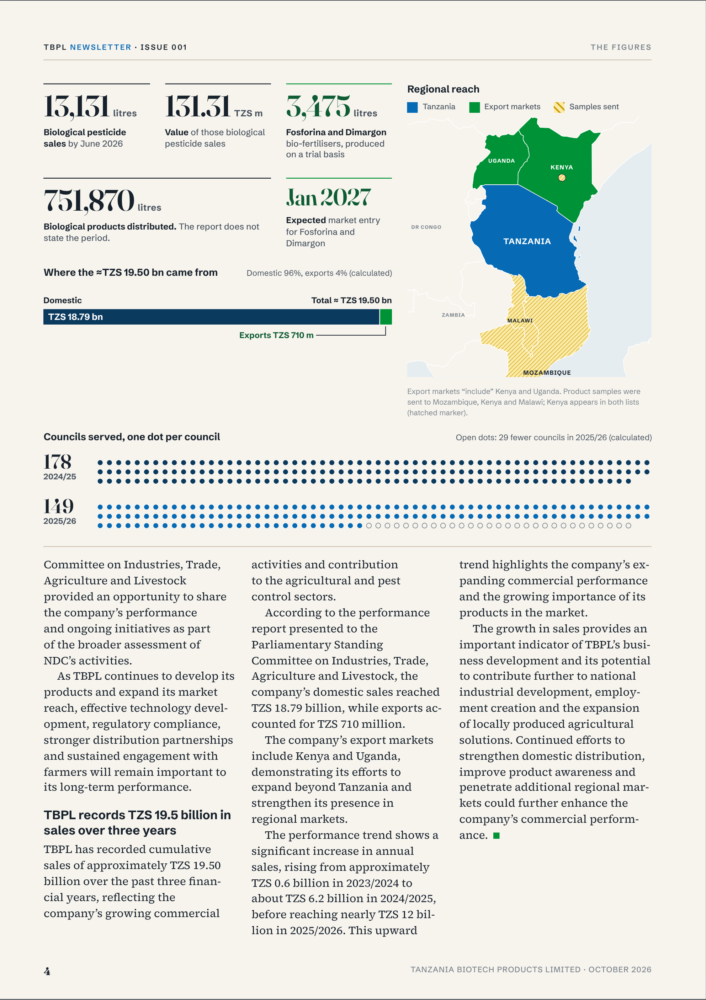
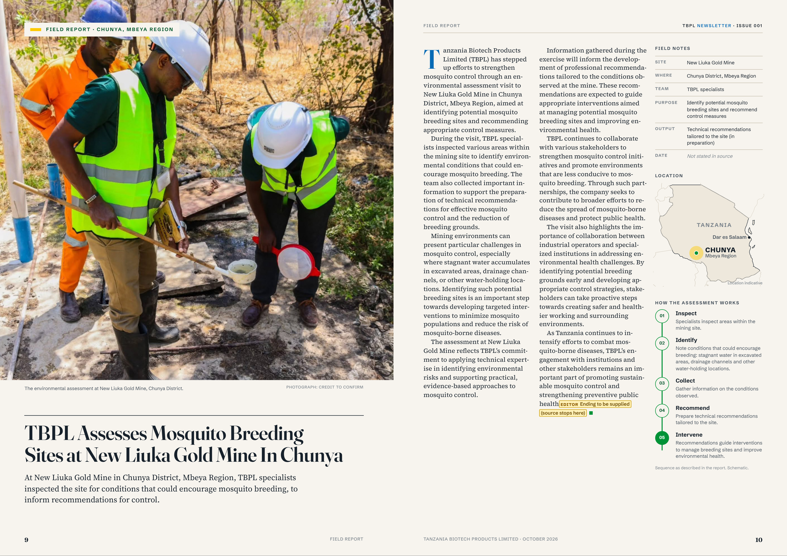
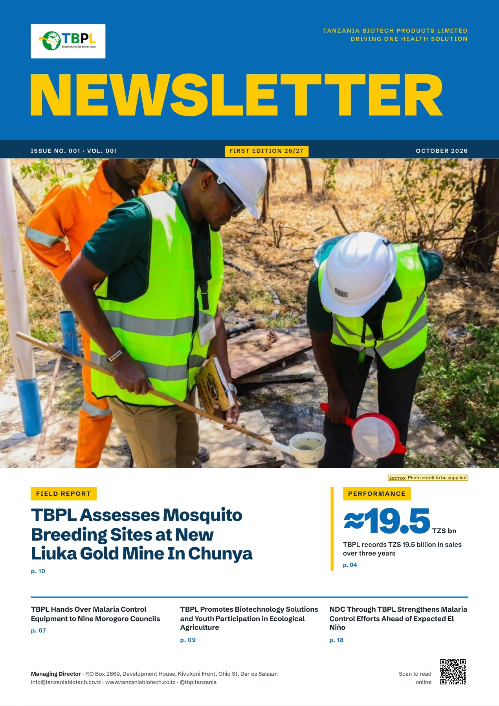
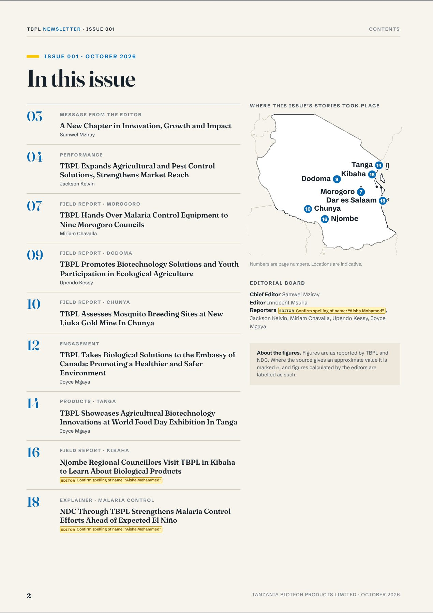

TBPL Newsletter · Issue 001 · Review hub
Prototype pages for editorial review
Three prototype templates built in the recommended direction (A, Documentary Ledger) from the verbatim Issue 001 text. Open any page with review mode to see flagged text, data-status labels and the editorial questions behind them.

Three visual directionsA Documentary Ledger (recommended) · B Laboratory Report · C Signal

1 · CoverLead photo, hero numeral, verbatim cover lines

3 · Data feature, pp. 2–3Sales story: opener with annual-sales chart, photo page

3 · Data feature, p. 4The figures: stat tiles, sales split, regional map, councils unit chart

5 · Field report, pp. 9–10New Liuka Gold Mine: bleed photo, field notes, locator, process rail
Final issue

Option B · Signal · 20 pagesBrand-forward theme over the same pages
Option A · Documentary · 20 pages53 EDITOR placeholders mark errors and missing labels

Full issue sourceBuilt in Direction A from the verbatim content file
Decisions recorded, 30 October 2026
- Direction A, Documentary Ledger, adapted to the available assets.
- The embassy is the Embassy of Canada; headline and contents corrected. (F1)
- Liuka article: byline, date and ending are placeholders. (F13)
- Annual sales shown as approximate; captions describe place and event only; no originals or vector files, so extracted assets are used within size rules. (F3, F16–F18)
- Output is an online PDF, so images must be at least 150 ppi.
- Anything with an error or a missing label prints as an EDITOR placeholder. The checklist is
out/editor-placeholders.md.
Full list: docs/01-content-audit.md, section 4, and the review notes on each prototype.